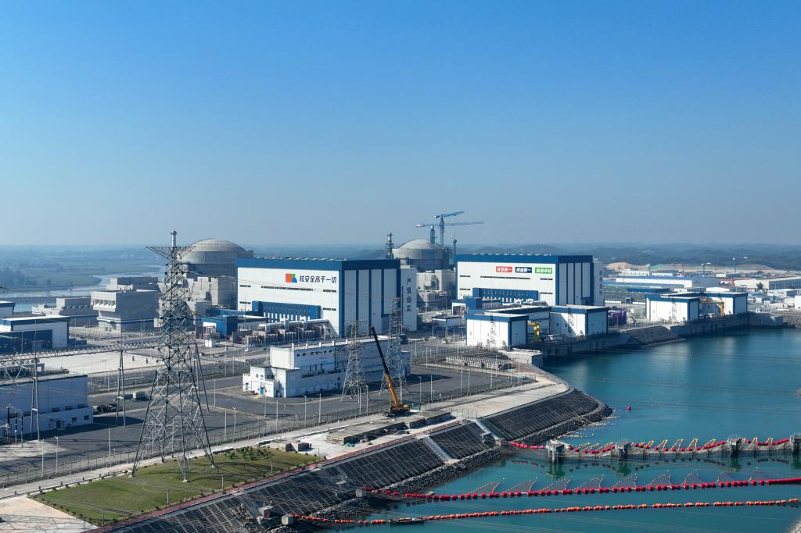

地理位置
中国广西壮族自治区防城港市
核电厂历史
1号机组于2010年始建，于2015年并网成功并在次年正式商转；
2号机组于2010年始建，于2016年并网成功并在同年正式商转；
3号机组于2015年始建，于2023年并网成功并在同年正式商转；
4号机组于2016年始建，于2024年并网成功并在同年正式商转。
堆形与数量
截止2024年11月，宁德核电厂有2台运行中的CPR-1000型号压水堆（1，2号）以及2台运行中的的华龙一号型号压水堆（3，4号）。
发电基本原理
压水堆（Pressurized Water Reactor）是采用高压水来冷却核燃料的一种反应堆，其工作原理为：主泵将120～160个大气压的一回路冷却水送入堆芯，把核燃料放出的热能带出堆芯，而后进入蒸汽发生器， 通过传热管把热量传给二回路水，使其沸腾并产生蒸汽，常在一回路水中加入硼酸，用以控制反应性的慢变化。之后，二回路产生的高压蒸汽会推动汽轮机发电，再经过冷凝器和预热器进入蒸汽发生器，完成二回路水循环。 压水堆的工作原理图如下所示：

图1：压水堆示意图
荣誉与贡献
截至2024年，防城港核电已累计获得自治区科学技术进步一等奖2项，科学技术发明三等奖1项。防城港核电厂还是中国西南沿海的重要清洁能源基地，为广西及南方电网提供了稳定充足的电力保障。截至2024年，防城港核电厂已累计发电超过1500亿千瓦时，为当地经济社会发展提供了坚实的能源支持。与同等规模的燃煤电站相比，防城港核电厂在节能减排方面成效显著，相当于减少标煤消耗约600万吨，减少二氧化碳排放约1500万吨，减少二氧化硫排放约15万吨，减少氮氧化物排放约10万吨，对改善区域大气环境起到了重要作用。
图2：防城港核电厂全景
参考文献
1. 俞冀阳.核工程基本原理.北京：清华大学出版社，2018
2. 俞冀阳.核电厂系统与运行.北京：清华大学出版社，2016
3. 2024年中国核电行业研究报告，2024
4. 国家核安全局网站
5. 广西防城港核电有限公司网站